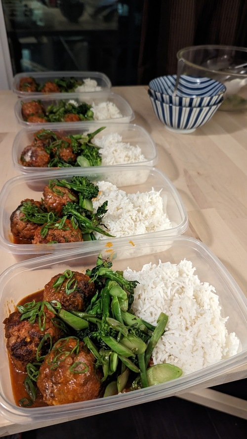

Spicy Meatballs

Serves: 5
Prep time: 1hr
Author: Matthieu Court
Ingredients
800g - 50/50 Pork/Beef lean mince
1/2 cup - Panko crumbs
Big Squirt - ketchup
Good Touches - Oregano, Thyme, Garlic + Onion Powder
Garnish - Green Onion bunch
1/2 cup or ~100g - Sriracha or Sambal Oelek
60g - Soy Sauce
30g - Apple Cider Vinegar
50g - Honey
Ginger + garlic cloves
Back to Home